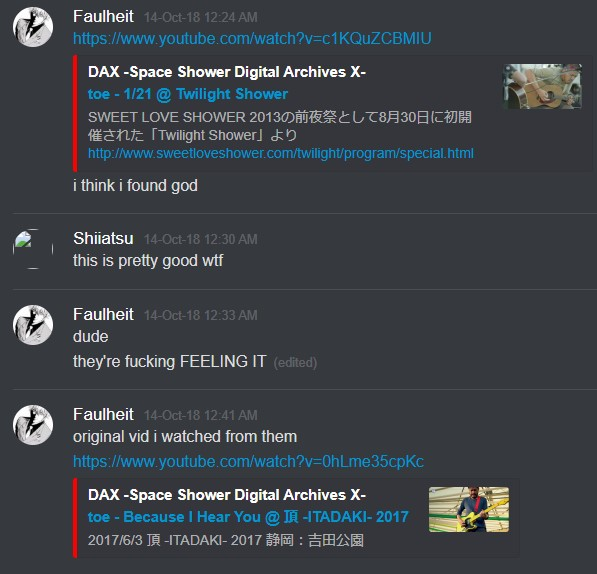

music was my first creative love, specifically playing the guitar. growing up i never had a defined taste in music. that is to say, i didnt listen to music at all. i remember i was in a god forsaken school camping trip and a teacher (actually she wasn't a teacher, she was just around and i never saw her before or since, but still was an older teacher-like figure) was asking everyone in the group what kinda music we listened to, and when it got to me i shyly replied a generic "...rock... and pop..."
in my early early teens i discovered monstercat. although i never got far at all into the monstercat/electronic/newgrounds, the handful of monstercat published songs i listened to have extreme nostalgic value for me. i remember me and a friend anthem was "disconnected". i remember being at his house once and we'd play that song on repeat and do weird dances; i vividly recall doing the thing were you lie on the floor sideways and do a walk motion with your legs to describe a circular motion on the ground (something i most definitely saw on cartoons) and his dad came to the room to check on us. i was so embarrassed.
this happened a bit later in the chronology, but one of my fondest memories of being a human being was listening to "frame of mind" and "till its over" on repeat (before there was a loop feature and before i figured out playlists were a thing) while grinding tetrisfriends while waiting for the next clannad after story episode to load on a totally legal site. at this point my internet was p bad so to watch an episode (in glorious 480p) without buffering i'd let it sit for a while. clannad after story has these abstract little girl with robot scenes at the start of every chapter, and that aesthetic combined with these two songs are engraved in my subconcious. i wish to make an animatio that could reflect that someday
a bit after that i got into osu and with that weeb songs, but again i was never a music listener per se, so i pretty much only listened to them ingame.
but everything change one faithful night. i must've been 15 or 16 and mindlessly scrolling through YouTube (before doomscrolling was cool), when i came across it. raw, evil, captivating; it was a reupload of iron maiden's the trooper, using the single's cover. truly i had never listened to something like it. and thus began my short lived metalhead phase. i would watch any content about metal: top 10 albums, opinions, skits, documentaries, anything. i was meticulous about it in a weird way. i kinda treated bands like shows, i'd set my eyes on one and listen to everything they had put out in chronological order. yes, this means i listened to every single maiden album, even those ones. from maiden i went to metallica, then megadeth. i had every single song downloaded on my hdd because i was too cool for streaming services. i tried some heavier stuff like slipknot and pantera, but they never clicked besides a couple songs. cliff was my first inspiration, and at that point i decided i was gonna become a bass player. i wrapped a rubber band around the first two stings of the ol' reliable nylon string that was lying around at my house and so my instrument playing journey began... and ended. i remember trying to play along with a video of a guy teaching that one super basic queen bass line (another one bites the dust?) but i just couldn't wrap my head around it (part of me was probably like, "that's it?"). it would be a while later that i would learn the concept of a "root note". after giving that up i figured i would try playing the guitar as, you know, an actual guitar and found much more success. changing between blocks of open chords clicked.
it was around this time that i started to transition away from metal. i have a theory that everyone that starts with metal either goes down in tuning (death, black) or up (literally anything else). i dont quite remember how it came to be. but i vividly remember having a phase during my last year of highschool and first year of uni of listening to asian kung-fu generation exclusively. i already had a past of listening to weeb shit. i played osu and watched a bunch of anime during highschool as previously mentioned. i vividly remember being depressed as fuck during winter break of my last year of hs. all my friends were gone on vacation and every day was rainy and gray and cold and sad. i would wake up at 4pm watch anime every day and then past midnight i would practice guitar. i didnt want anyone in the house to hear me (though they probably did and were very annoyed by it). i was listening to a bunch of girldemo and "last song" in particular. i was in a mindset of "i don't wanna do anything else besides learn how to make something as impactful as 'last song'". in a very sad and selfloathing way. made some great progress tho!
and one quiet and cold night everything changed (again). the universe, the stars, youtube's algorithm identifying my fondness for japanese music and my willingness to doomscroll my recommended fee at 4am aligned. it was life-changing. i remember immediately after listening to it i posted it to the discord server i was active in at the time's music channel with the caption "i found god".

it was toe's "because i hear you" live at dax space. at the time i didnt have the words to explain why, but it resonated with me on a deeper level. quickly i found out about this whole "math rock" biz and got to work fast. there was a pinned post on r/mathrock where people recommended albums for newcomers to the genre. i liked this guerrilla way of getting into it, propelled by the fact that math rock comes hand in hand with youtube-core. during this time i found absolute classics like the math rock international compilation, instrumental math rock compilation (the one with the cat) and math rock no added sugar.
during this time i still wasnt using any streaming service, only regular YouTube. i made a playlist called 'math rock BANGER albums' that narrates my album discovery chronoloogy. and that's pretty much where we're at right now. im still hovering in that math rock-jrock-emo-harcore conglomerate, with some electronic here and there (i'm just calling it electronic but there are like a million different genres)
club penguin was long dead and gone but i was still eager to play. so for a short while i frequented cpps, mainly rewritten while that was still a thing. there i had this funny interaction where someone came to my igloo, saw that it had a bunch of guitar racks and posters furniture and asked "you play guitar, don't you?"
indeed while all this music discovery was going on i was still on the strings. as i got into math rock i obviously started watching "let's talk about math rock" and "Trevor Wong". it was around this time that the need to make music really started to grow. however now it wasn't enough to just strum some chords, it had to be complex, twinlkly, chaotic, upbeat, fast, emotional; it had to be math. to say this was (and still is) a struggle is an understatement. in the past i've tried everything: open tunings, standard, all forths, tapping, strumming, instrumentals, singing, distortion, vocaloid (fuck i should go back to that that was cool...), clean, raw recording, solo guitar, 10 guitar tracks at the same time, drum and bass, no drum and bass. none of these really led me anywhere. looking back, i think it's clear that i had no direction. i just wanted to make something, don't know what. didn't know exactly what i wanted to say either. i would listen to something and be like damn this is it it's gotta be totally like this. then halfway through making a song i'd listen to something else and be like nah its gotta be like this now. cycle goes on an on. the few things i managed to unearth can be heard in themy music section.
lately i've been listening to a lot of girlfriends (not thanks to tiktok, bcuz im cooler than that), some don cab and toe as always. i've realized that i really really like loop based music. while toe is not loops per se, it still has that layering loop feel. i'm get to set this up but i wanna try using my keyboard as a midi controller and set up a loop station in reaper. kinda regreat selling that looper pedal i had years ago. i think this is the play cuz im finding myself with less and less time, and looping is less time consuming. i can just start layering and something will come out, it may not be good, but it would be something, and that's good enough

Can I borrow your rain coat? When the world is too blue so I put my night-light colored sunglasses on. There's still the half-burned polaroid picture of us under your ashtray, that I look at to remember my face.